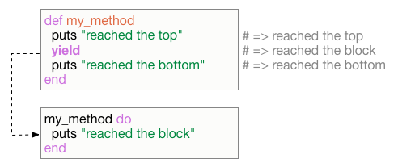
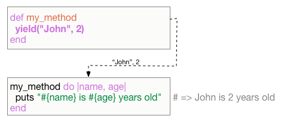
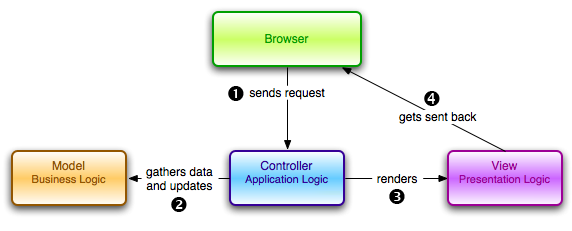

SWI 2
Libor Pichler
lpichler@redhat.com
Roman Blanco
rblanco@redhat.com
Todays agenda
Organizational Info
Before you start
What is ruby?
Hello world!
Blocks
Blocks

Blocks

Blocks
It is just passing a code to method
Blocks examples
Blocks examples
Task
Task
Solution
Packaging system in ruby
Ruby on Rails

The ActiveRecord Module
Stories table. example
use full tools
basic of testing
Have a great day!